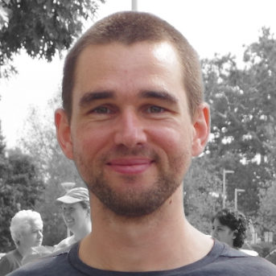
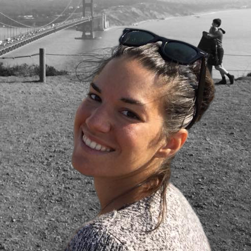
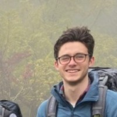
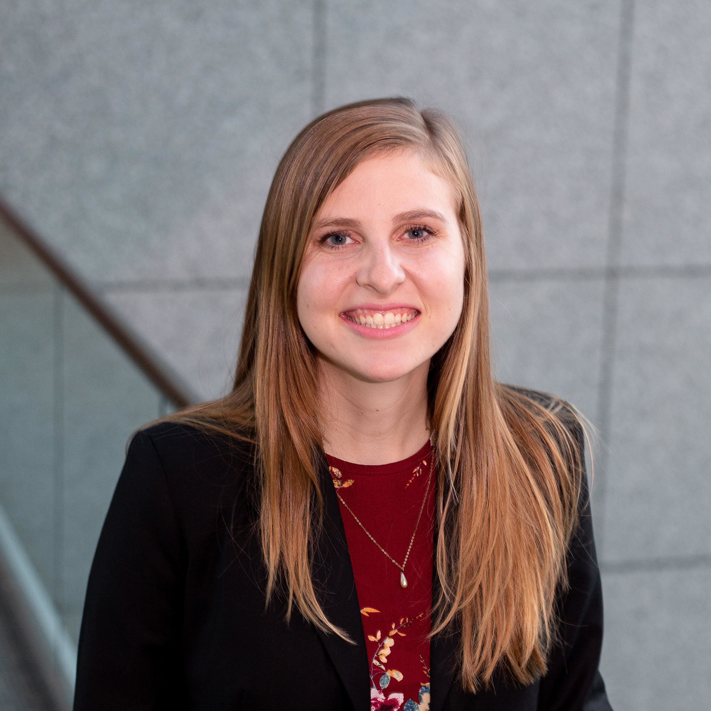
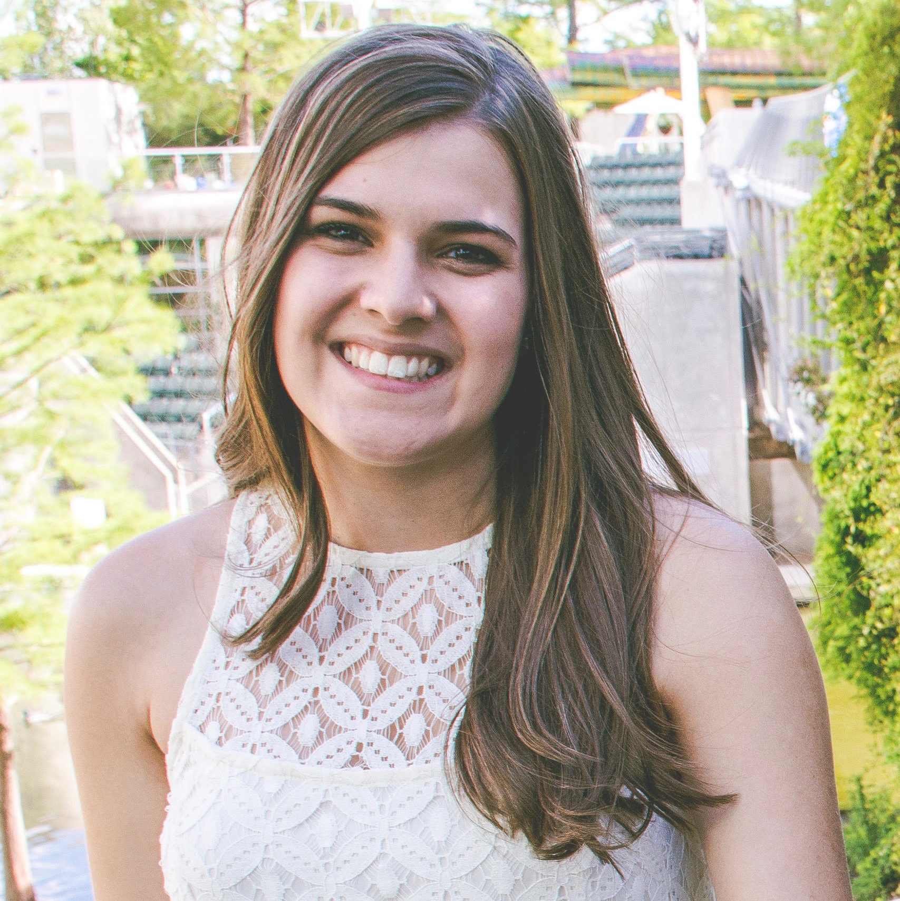

- Steering Committee
- Organizing Committee
- Program Committee
- Highlights Committee
- Posters Committee
- Travel Fellowships Committee
- Volunteers
Steering committee
Organizing committee
Jan Hoinka
National Institutes of Health, USA
Publicity Chair
National Institutes of Health, USA
Publicity Chair
Rebecca Sarto Basso
University of California, Berkeley, USA
Publicity Chair
University of California, Berkeley, USA
Publicity Chair
Chanson Benjamin
The George Washington University, USA
Visual Design
The George Washington University, USA
Visual Design
Program committee
PC members :
-
- Derek Aguiar – University of Connecticut
- Tatsuya Akutsu – Kyoto University
- Can Alkan – Bilkent University
- Patrick Aloy – IRB Barcelona
- Rolf Backofen – Albert Ludwigs University Freiburg
- Vineet Bafna – University of California, San Diego
- Nuno Bandeira – University of California, San Diego
- Ziv Bar-Joseph – Carnegie Mellon University
- Anastasia Baryshnikova – Calico Life Sciences
- Niko Beerenwinkel – ETH Zurich
- Bonnie Berger – Massachusetts Institute of Technology
- Mathieu Blanchette – McGill University
- Héctor Corrada Bravo – University of Maryland, College Park
- Michael Brudno – University of Toronto
- Sebastian Böcker – Friedrich Schiller University Jena
- Tony Capra – Vanderbilt University
- Cedric Chauve – Simon Fraser University
- Lenore J. Cowen – Tufts University (chair)
- Nadia El-Mabrouk – University of Montreal
- Irit Gat-Viks – Tel-Aviv University
- Dario Ghersi – University of Nebraska Omaha
- Anna Goldenberg – Hospital for Sick Kids/University of Toronto
- Fereydoun Hormozdiari – University of California, Davis
- Sorin Istrail – Brown University
- Tao Jiang – University of California, Riverside
- John Kececiogu – University of Arizona
- Manolis Kellis – Massachusetts Institute of Technology
- Carl Kingsford – Carnegie Mellon University
- Gunnar W. Klau – Heinrich Heine University Düsseldorf
- Mehmet Koyuturk – Case Western Reserve University
- Smita Krishnaswamy – Yale University
- Jens Lagergren – KTH Royal Institute of Thechnology
- Mark Leiserson – University of Maryland, College Park
- Ming Li – University of Waterloo
- Po-Ru Loh – Harvard Medical School
- Paul Medvedev – The Pennsylvania State University
- Bernard Moret – Ecole Polytechnique Fédérale de Lausanne
- Sara Mostafavi – University of British Columbia
- Veli Mäkinen – University of Helsinki
- William Stafford Noble – University of Washington
- Lior Pachter – California Institute of Technology
- Laxmi Parida – IBM
- Robert Patro – Stony Brook University
- Yann Ponty – CNRS/LIX, Ecole Polytechnique
- Natasa Przulj – University College London
- Mireille Regnier – CNRS, Ecole Polytechnique
- Knut Reinert – FU Berlin
- S. Cenk Sahinalp – Indiana University Bloomington
- Michael Schatz – Johns Hopkins University
- Alexander Schoenhuth – Centrum Wiskunde & Informatica
- Russell Schwartz – Carnegie Mellon University
- Roded Sharan – Tel Aviv University
- Mona Singh – Princeton University
- Donna Slonim – Tufts University
- Sagi Snir – University of Haifa
- Jens Stoye – Bielefeld University
- Fengzhu Sun – University of Southern California
- Wing-Kin Sung – National University of Singapore
- Ewa Szczurek – University of Warsaw
- Haixu Tang – Indiana University Bloomington
- Glenn Tesler – University of California, San Diego
- Fabio Vandin – University of Padova
- Martin Vingron – Max Planck Institut fuer Molekulare Genetik
- Jerome Waldispuhl – McGill University
- Tandy Warnow – University of Illinois at Urbana-Champaign
- Sebastian Will – University of Vienna
- Jinbo Xu – Toyota Technological Institute at Chicago
- Yuzhen Ye – Indiana University Bloomington
- Alex Zelikovsky – Georgia State University
- Jianyang Zeng – Tsinghua University
- Louxin Zhang – National University of Singapore
Highlights committee
- Teresa Przytycka – National Institutes of Health
- Ben Raphael – Princeton University
Publications committee

Poster committee
Travel Fellowships committee
Volunteers
Rebecca Clement
The George Washington University, USA
Volunteer Co-chair
The George Washington University, USA
Volunteer Co-chair
Keylie Gibson
The George Washington University, USA
Volunteer Co-chair
The George Washington University, USA
Volunteer Co-chair

- Pavel Avdeyev – The George Washington University (co-chair)
- Mira Barshai – Ben Gurion University of the Negev
- Victoria Cepeda – University of Maryland, College Park
- Yuexi (Tracy) Chen – University of Maryland, College Park
- Rebecca Clement – The George Washington University (co-chair)
- Abhinandan Devaprasad – UMC Utrecht
- Kapil Devkota – Tufts University
- Nusrat Epsi – Rutgers University
- Jason Fan – University of Maryland, College Park
- Nicholas Franzese – University of Maryland, College Park
- Keylie Gibson – The George Washington University (co-chair)
- Kiran Javkar – University of Maryland, College Park
- Ting Jin – Stony brook University
- Xuan Li – University of Maryland, College Park
- Jiaqi Li – Tsinghua University
- Yiran Li – University of Georgia
- Yiyang Lian – George Mason University
- Christopher Pietras – Tufts University
- Amatur Rahman – Pennsylvania State University
- Elham Sherafat – University of Connecticut
- Lucia Williams – Montana State University